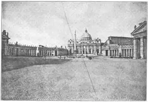
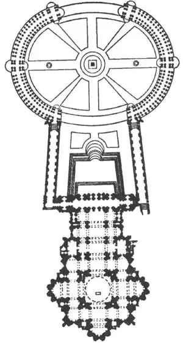

79
BACKWARD AND FORWARD
回顾过去，展望未来

IN 1492 Columbus discovered America. Every one knows that date. And so it is easy to remember when Renaissance architecture began in Italy. It was in the same century as 1492，the fourteen-hundreds. Some of the earliest Renaissance buildings of the fourteen-hundreds are the best. On the next page is a picture of the Riccardi Palace in Florence. It looks more like a fort than a palace and that is what it really was on the outside—a fort.
There was so much fighting going on that these palaces in Florence had to be built like forts. Notice the iron bars on the lower windows. Notice the heavy rough stones in the lower story. That kind of stone-work is called “rusticated.” The stones bulge out from the joints between them. This makes the building look strong and solid.
The top of the building is crowned by a ledge that sticks out all around the wall. Such a ledge is called a cornice. The cornice kept the building from looking like a plain box. The cornice finished off the top of a building just the way a capital finished off the top of a column. The windows have round arches, not pointed like Gothic.
The building is more like a palace inside than outside. In the middle of the inside is an open courtyard which has balconies around it. There is a big banqueting hall, a library, and other finely furnished rooms. This Renaissance building is called the Riccardi Palace because Riccardi was the name of the family who bought it from the Medici family who built and lived in it first. And now is a good time to notice a great big difference between Gothic and Renaissance buildings. In Gothic buildings most of the lines are up and down. The eye is carried from the ground straight up to the top of the building. But in Renaissance buildings most of the lines are lengthwise—horizontal. In the Riccardi Palace your eye notices the horizontal lines of stones, the windows all in line, the horizontal ledges under the windows, and the long, straight cornice.
Several famous Renaissance architects followed Brunelleschi. One, named Bramante, made a plan for a great cathedral to be built in Rome for the Pope. It was to be the largest church in the world. And was to be called St. Peter’s. But Bramante died before much work had been done. Several other architects worked on this big building, until it was finally given into the care of the mighty Michelangelo, who was the greatest Renaissance sculptor as well as a great painter, poet, and wonderful architect. Michelangelo was an old man, but he pushed the work forward on St. Peter’s so that it was almost finished at his death. Michelangelo’s plan was to have the church built in the form of a Greek cross, with a magnificent dome over the middle.

No.79-2 PLAZA OF ST. PETER’S, ROME（罗马圣彼得大教堂广场）
Michelangelo made everything about St. Peter’s so tremendously large that the cathedral doesn’t look as large as it really is. That sounds funny, I know. You’d think the bigger a thing was, the bigger it would look. That isn’t always so. It depends on something called scale . If you take a photograph of a tree, you can’t tell from the photograph how big the tree is unless there is a man or a dog or a house or something near the tree to give you some way of measuring. (It is, the same with a map: you can’t tell whether a town is thirty miles away or three hundred miles unless there is a scale to measure by.)

No.79-3 PLAN OF ST. PETER’S
ROME
（罗马圣彼得大教堂平面）
Courtesy of The University Prints
The windows of St. Peter’s are about four times as tall as a man. So unless you see a man near them you would naturally think they were about four times as small as they are, because most windows are about as tall as one man. That is the great trouble with St. Peter’s. It lacks scale.
Long after Michelangelo had died, another architect added a new front to the cathedral, and this cut off the front view of Michelangelo’s wonderful dome. This architect also made the church a Latin cross by extending the front. Then still later another man named Bernini added two colonnades, or rows of columns, to the front. These rows of columns are built around two sides of a great circular open space out in front of the cathedral.
The colonnades by Bernini are beautiful, but they haven’t anything to help us judge their size by, any more than the cathedral has. They lack scale, just as the cathedral itself lacks scale. Look very closely at the picture and you will see some people in the square. When you measure the cathedral by them, you get some idea of how big it really is.
Look at the plan of St. Peter’s, showing the cathedral itself and, at the top of the plan, the arrangement of the Bernini colonnades.
Gothic columns were never very much like Roman columns. But the Renaissance architects used the Roman capitals on the columns of their buildings. Sometimes they even pulled down Roman buildings and used the columns for new Renaissance buildings. Notice, too, the columns, which are like Roman columns.
There were many famous Renaissance architects in Italy and they have left many famous buildings, but we’ll have to skip over some of them to tell you about a man named Palladio. Palladio made famous a special use of columns. The columns run from the ground up past two or three stories. This is called the Palladian style, because Palladio wrote a book about it which architects in other countries as well as in Italy found very useful. The front of St. Peter’s shows columns running past two stories.
Renaissance architecture spread from Italy to other countries and has been used ever since. All styles of architecture grow out of earlier styles. The Renaissance architecture grew by looking backward toward Rome, but its use came at a time when the world was looking forward to greater things. Explorers, scientists, thinkers were showing the way to modern times, though they were getting some of their ideas from studying ancient ways. They were looking backward but moving forward.
【中文阅读】
1492年，哥伦布发现了美洲。每个人都知道那个日子。
所以要想记住文艺复兴式建筑在意大利开始的时间也就不难了。因为文艺复兴式建筑在意大利开始的时间与1492年哥伦布发现美洲同处一个15世纪。某些在15世纪初期建造的文艺复兴式建筑是最好的。下面有一幅佛罗伦萨里卡尔迪宫的图。它看起来不像宫殿，倒更像是一座堡垒，从外表看，它真的是一座堡垒。
那时佛罗伦萨战火连连，宫殿都不得不建成堡垒的样子。看到下面的窗户都配了铁栅栏吧。再注意一下底层用的，都是大块的粗石。这种砖式结构叫做“粗石式”。粗石的夹缝中再补石头，凸凹不齐，使建筑物看上去坚不可摧。
建筑物顶端的墙壁周围凸出来一圈壁架。这种壁架叫做飞檐。飞檐使建筑物看起来就不会像个死板的大盒子跺在那儿。飞檐是连接建筑物顶端的造型，与柱头和柱子的连接处是一样的。窗户上的拱门呈圆形，不像哥特式的尖拱。
建筑物的内部比外部更像是宫殿。殿内中央有一个露天庭院，还围有阳台。内设大型宴会厅、图书馆和其他精装房。这座文艺复兴式建筑物叫做里卡尔迪宫。虽然它最初是由美第奇家族建造并入住，但后来里卡尔迪家族从美第奇家族买下了这座宫殿。
现在我们来好好地比较一下文艺复兴式建筑与哥特式建筑的区别了。哥特式建筑的大部分线条都是纵向的，让视线从地面直上屋顶；而文艺复兴式建筑的线条都是延伸状的——即水平式的。看里卡尔迪宫你会注意到块块水平状的石头、排列整齐的窗户、窗下的水平式壁架，以及笔直修长的飞檐。
布鲁内莱斯基之后又出现了好几位著名的文艺复兴式建筑师。其中一位叫布拉曼特，他为教皇要在罗马建造的大教堂作了设计，计划建成世界上规模最大的教堂，也就是圣彼得大教堂。但布拉曼特在开工没多久就去世了。这项大工程就落到了其他几个建筑师头上，直到最终由伟大的米开朗基罗来接管。米开朗基罗是文艺复兴时期最 伟大的雕刻家，同时也是伟大的画家、诗人和杰出的建筑家。当时的米开朗基罗虽已垂垂老矣，但在他的促使下，圣彼得大教堂得以在他去世时大致完成。米开朗基罗本来打算按希腊式十字形来建造，并在教堂的中央建一个大圆顶。
米开朗基罗竭尽全力把圣彼得大教堂造得壮观宏大，但实际看上去却反而不是那么大。我知道这听起来很搞笑。你也许会认为，物体越大，看起来也就越大。但实际上并不总是这样。这与比例有关。如果给一棵树照一张照片，你就没法从照片上看出这树到底有多大，除非站着一个譬如人啊、狗啊、房子啊一类的参照物。（这和地图上的比例一样：除非有比例尺，你才能知道一个城镇到底是30英里还是300英里远。）
圣彼得大教堂的窗户有普通人身高的四倍。但除非窗户旁站个人，要不然它们就会被认为也就一个人那么高，因为大部分窗户让人看上去就那么高。所以缺少参照物就成了圣彼得大教堂的一个大问题。
米开朗基罗去世很久以后，另外一位建筑师给这座大教堂重新加了一个正面，切断了米开朗基罗那漂亮圆顶的正面视线。他还将正面延长，使教堂呈拉丁式十字形。后来一个叫贝尔尼尼的人在教堂正面加了两条柱廊，或者叫两排柱子。这两排柱子建在大教堂前部的半圆形空地上，环绕两边呈椭圆形。
贝尔尼尼的柱廊非常美观，但是我们没法知道柱廊的大小，就像我们没法知道教堂的大小一样，因为柱廊和大教堂一样，都缺乏参照物。如果仔细看看图片，就会发现广场上有些人。如果以他们为参照物，就能大致看出教堂有多么高大宏伟了。
让我们来看看圣彼得大教堂的平面图，它展现了大教堂的基本模型，图纸的上方则是贝尔尼尼对柱廊的设计。
哥特式柱子与罗马式柱子看起来毫不相同。但是文艺复兴式建筑师将柱子的顶部设计成罗马式柱头。有时侯他们甚至会把罗马式建筑物拆除，但却用它们的柱子来造文艺复兴式建筑物。再看看柱式吧，它们真像罗马式的。
意大利有许多著名的文艺复兴式建筑师，他们给后人留下了许多著名的建筑物，但是我们不得不跳过他们当中的几位，来介绍名叫帕拉迪奥的这个人。帕拉迪奥因赋予柱子一种特殊的用途而出名。这些柱子拔地而起，足有两三层楼那么高。这被称作“帕拉迪奥风格”。帕拉迪奥还写了一本书，专门介绍他的风格，意大利和其他国家的建筑师都发现那很管用。圣彼得大教堂正面的柱子超过两层楼高。
文艺复兴式建筑从意大利传播到其他国家，一直沿用至今。所有的建筑风格都是从更早期衍生而来。文艺复兴式建筑的发展可以追溯到古罗马，但直到全世界都期待更宏伟的建筑物出现时，文艺复兴式建筑风格才被采用。探险家、科学家、思想家们都在引领现代之路，但他们的某些思想也是源于先贤。只有回顾过去，才能展望未来。